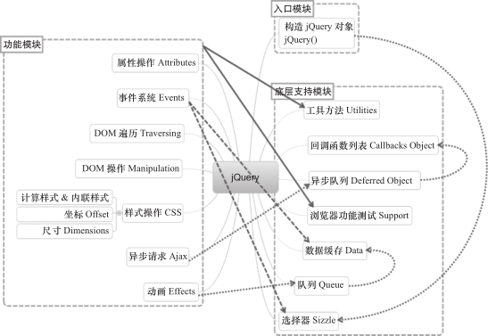

jQuery技术内幕笔记-1-总体框架
本系列笔记来自《jQuery技术内幕》一书中的部分内容。注意：其内的jQuery版本为1.7.1，后面的版本也许在一些方法和功能模块上有修改，了解其思想即可，但不可想当然的直接认定。
总体架构
jQuery 的模块可以分为 3 部分：入口模块、底层支持模块和功能模块，模块之间存在依赖关系，如下图：

jQuery 的模块分类和主要依赖关系
在构造 jQuery 对象模块中，如果在调用构造函数 jQuery() 创建 jQuery 对象时传入了选择器表达式，则会调用选择器 Sizzle 遍历文档，查找与之匹配的 DOM 元素，并创建一个包含了这些 DOM 元素引用的 jQuery 对象。
在底层支持模块中，
- 选择器 Sizzle 是一款纯 JavaScript 实现的 CSS 选择器引擎，用于查找与选择器表达式匹配的元素集合。
- 工具方法模块提供了一些编程辅助方法，用于简化对 jQuery 对象、DOM 元素、数组、对象、字符串等的操作，例如，jQuery.each()、jQuery.map()等，其他所有的模块都会用到工具方法模块。
- 浏览器功能测试模块提供了针对不同浏览器功能和 bug 的测试结果，其他模块则基于这些测试结果来解决浏览器之间的兼容性问题。
- 回调函数列表模块用于增强对回调函数的管理，支持添加、移除、触发、锁定、禁用回调函数等功能；
- 异步队列模块用于解耦异步任务和回调函数，它在回调函数列表的基础上为回调函数增加了状态，并提供了多个回调函数列表，支持传播任意同步或异步回调函数的成功或失败状态；
- 数据缓存模块用于为 DOM 元素和 JavaScript 对象附加任意类型的数据；
- 队列模块用于管理一组函数，支持函数的入队和出队操作，并确保函数按顺序执行，它基于数据缓存模块实现。
在功能模块中，
- 事件系统提供了统一的事件绑定、响应、手动触发和移除机制，它并没有将事件直接绑定到 DOM 元素上，而是基于数据缓存模块来管理事件；
- Ajax 模块允许从服务器上加载数据，而不用刷新页面，它基于异步队列模块来管理和触发回调函数；
- 动画模块用于向网页中添加动画效果，它基于队列模块来管理和执行动画函数；
- 属性操作模块用于对HTML 属性和 DOM 属性进行读取、设置和移除操作；
- DOM 遍历模块用于在 DOM 树中遍历父元素、子元素和兄弟元素；
- DOM 操作模块用于插入、移除、复制和替换 DOM 元素；
- 样式操作CSS由三部分组成:
- 样式操作模块用于获取计算样式或设置内联样式；
- 坐标模块用于读取或设置 DOM 元素的文档坐标；
- 尺寸模块用于获取 DOM 元素的高度和宽度。
jQuery 源码（jquery-1.7.1.js）的总体结构如下：1
2
3
4
5
6
7
8
9
10
11
12
13
14
15
16
17
18
19
20
21
22
23
24
25(function( window, undefined ) {
// 构造 jQuery 对象
var jQuery = (function() {
var jQuery = function( selector, context ) {
return new jQuery.fn.init( selector, context, rootjQuery );
}
return jQuery;
})();
// 工具方法 Utilities
// 回调函数列表 Callbacks Object
// 异步队列 Deferred Object
// 浏览器功能测试 Support
// 数据缓存 Data
// 队列 Queue
// 属性操作 Attributes
// 事件系统 Events
// 选择器 Sizzle
// DOM 遍历 Traversing
// DOM 操作 Manipulation
// 样式操作 CSS（计算样式、内联样式）
// 异步请求 Ajax
// 动画 Effects
// 坐标 Offset、尺寸 Dimensions
window.jQuery = window.$ = jQuery;
})(window);
自调用匿名函数
jQuery 的所有代码都被包裹在了一个立即执行的匿名函数表达式中，当浏览器加载完 jQuery 文件后，自调用匿名函数会立即开始执行，初始化 jQuery 的各个模块。代码如下：1
2
3
4
5(function( window, undefined ) {
var jQuery = ...
// ...
window.jQuery = window.$ = jQuery;
})(window);
为什么要创建这样一个自调用匿名函数 ?
通过创建一个自调用匿名函数，创建了一个特殊的函数作用域，该作用域中的代码不
会和已有的同名函数、方法和变量以及第三方库冲突。
在这个自调用匿名函数的最后，通过手动把变量 jQuery 添加到 window 对象上，明确地使变量 jQuery 成为公开的全局变量，而其他的部分将是私有的。
为什么要为自调用匿名函数设置参数 window，并传入 window 对象？
通过传入 window 对象，可以使 window 对象变为局部变量（即把函数参数作为局部变量使用），这样当在 jQuery 代码块中访问 window 对象时，不需要将作用域链回退到顶层作用域，从而可以更快地访问 window 对象；
另外，将 window 对象作为参数传入，可以在压缩代码时进行优化，在压缩文件 jquery-1.7.1.min.js 中可以看到下面的代码：1
2(function(a,b){ ... })(window);
// 参数 window 被压缩为 a，参数 undefined 被压缩为 b
什么要为自调用匿名函数设置参数 undefined ？
特殊值 undefined 是 window 对象的一个属性，例如，执行下面的代码将会弹出 true：1
2alert( undefined in window ); // true
alert( "undefined" in window ); // true
通过把参数 undefined 作为局部变量使用，但是又不传入任何值，可以缩短查找 undefined 时的作用域链，并且可以在压缩代码时进行优化。
另外，更重要的原因是，通过这种方式可以确保参数 undefined 的值是 undefined，因为undefiend 有可能会被重写为新的值(某些老浏览器下可以)。可以用下面的代码来尝试修改 undefined 的值：1
2undefined = "now it's defined";
alert( undefined );
注意自调用匿名函数最后的分号
通常在 JavaScript 中，如果语句分别放置在不同的行中，则分号（;）是可选的，但是对于自调用匿名函数来说，在之前或之后省略分号都可能会引起语法错误。
如果自调用匿名函数的前一行末尾没有加分号，则自调用匿名函数的第一对括号会被当作是函数调用。1
2
3var n = 1
( function(){} )()
// Uncaught TypeError: 1 is not a function
如果未在第一个自调用匿名函数的末尾加分号，则下一行自调用匿名函数的第一对括号会被当作是函数调用。1
2
3( function(){} )()
( function(){} )()
// Uncaught TypeError: (intermediate value)(...) is not a function
所以，在使用自调用匿名函数时，最好不要省略自调用匿名函数之前和之后的分号。